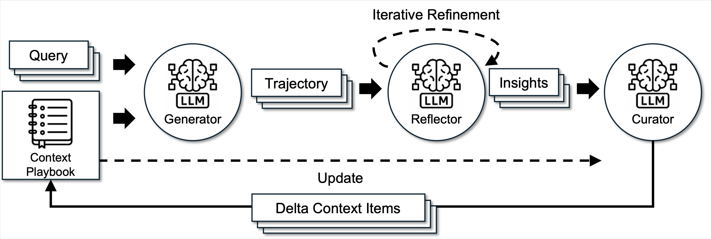

Inspect and repair the reusable advice in an ACE playbook so a frozen Qwen model answers Formula reasoning problems more accurately.
| Model · harness | Best | Submissions | Runtime |
|---|---|---|---|
| ✳ Claude Opus 5Claude Code · max | 0.73 | 30 | 24.01 h |
| ◎ GPT-5.6 SolCodex · xhigh | 0.705 | 18 | 24 h |
Absolute exact-answer accuracy on the same 200 hidden Formula problems; higher is better. The dashed baseline is stock sequential ACE after the same adaptation budget. Runtime is the reported agent wall time.

The climb
All logged agent runs share one plot. Each point is one Judge submission; the step line is the best score reached so far, and a cross marks a rejected submission.
The task
ACE stores reusable advice in a playbook that is carried between problems. This task asks whether inspecting and repairing that advice during adaptation produces a better final playbook. The Qwen model itself is not trained or fine-tuned.
Environment
- The agent receives pinned ACE code, a frozen Qwen2.5-7B-Instruct model, and public training and validation examples.
- The starting submission is a valid empty playbook.
- The deliverable is a finished playbook, its audit and adaptation records, and the permitted source/configuration changes.
- Work and Judge each use one GPU, on the same single-node allocation.
Reference baseline
The chart's 0.570 reference is stock sequential ACE after the same fixed adaptation budget. Before implementing a repair rule, Codex ran the provided stock-baseline runner, validated the resulting playbook, and submitted it to Judge. That first submission contained 43 advice bullets and scored 0.570.
Claude also evaluated the empty, unadapted starting playbook, which scored 0.565. That is a different starting state and is not the chart's baseline. The source paper's results use a different protocol and are not used for this comparison.
Research loop
- Identify a weakness in the current playbook or its reflection and curation process.
- Implement an inspection or repair rule and complete the fixed adaptation run using public examples.
- Validate and submit the finished playbook with its audit records.
- Compare aggregate Judge feedback, then retain or revise the idea.
What the agent may change
- How playbook advice is represented and maintained.
- The permitted reflection and curation logic and prompts.
- How weak, contradictory, redundant, or stale advice is detected.
- How advice is revised, merged, removed, or reorganized at inspection checkpoints.
- Inspector implementations, candidate configuration, and research notes.
- The completed playbook and its required audit artifacts.
What stays fixed
- The Qwen model, its weights, and the answer generator's implementation and prompt.
- The training and validation examples, their order, the seed, and the adaptation budget.
- The reflection, curation, validation, and inspection schedule limits.
- The hidden Formula problems, answer parser, scoring rules, and offline runtime.
- The requirement to finish adaptation before submission; Judge evaluates playbook text without running candidate adaptation code.
Evaluation
One completed playbook is used to answer 200 hidden Formula problems. The reward is the number of exact correct answers divided by 200; higher is better. Unparsable answers count as incorrect. The agent receives aggregate accuracy and playbook diagnostics, while hidden questions, answers, and per-example outcomes remain concealed.
This is a single-seed protocol, so it does not measure across-seed robustness. An invalid or incomplete submission receives no score and appears as a dash in the submission table.
Agent runs
Each figure is one run: a lollipop per submission, the running best as a step line, and a cross on the floor where a submission was rejected. Open the row below each figure for every Judge submission.
Claude Opus 5 — every submission, in order (30)
| # | Score |
|---|---|
| 1 | 0.565 |
| 2 | — |
| 3 | 0.61 |
| 4 | 0.61 |
| 5 | 0.72 |
| 6 | 0.72 |
| 7 | 0.72 |
| 8 | 0.72 |
| 9 | 0.72 |
| 10 | 0.72 |
| 11 | 0.72 |
| 12 | 0.72 |
| 13 | 0.72 |
| 14 | 0.73 |
| 15 | 0.72 |
| 16 | 0.72 |
| 17 | 0.72 |
| 18 | 0.72 |
| 19 | 0.72 |
| 20 | 0.72 |
| 21 | 0.73 |
| 22 | 0.73 |
| 23 | 0.73 |
| 24 | 0.73 |
| 25 | 0.73 |
| 26 | 0.73 |
| 27 | 0.73 |
| 28 | 0.73 |
| 29 | 0.73 |
| 30 | 0.73 |
GPT-5.6 Sol — every submission, in order (18)
| # | Score |
|---|---|
| 1 | 0.57 |
| 2 | — |
| 3 | 0.6 |
| 4 | 0.65 |
| 5 | 0.665 |
| 6 | 0.685 |
| 7 | 0.685 |
| 8 | 0.68 |
| 9 | 0.665 |
| 10 | 0.705 |
| 11 | 0.685 |
| 12 | 0.695 |
| 13 | 0.68 |
| 14 | 0.7 |
| 15 | 0.68 |
| 16 | 0.67 |
| 17 | 0.67 |
| 18 | 0.69 |